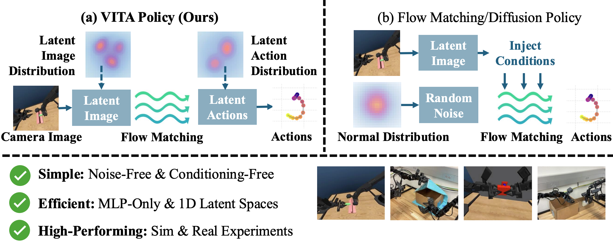
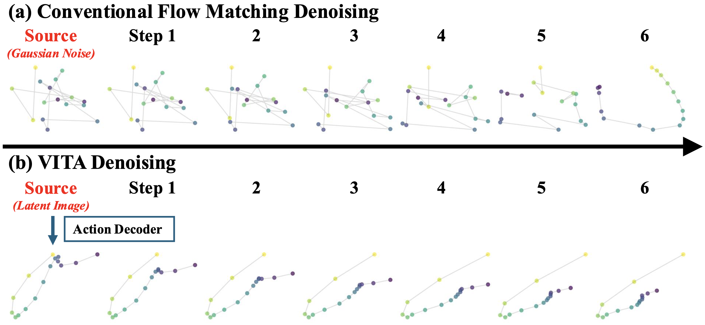
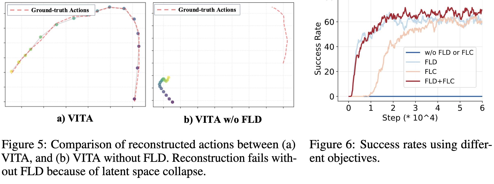
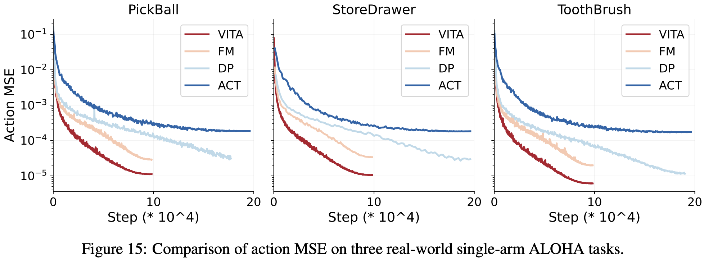
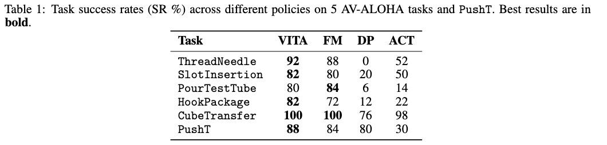
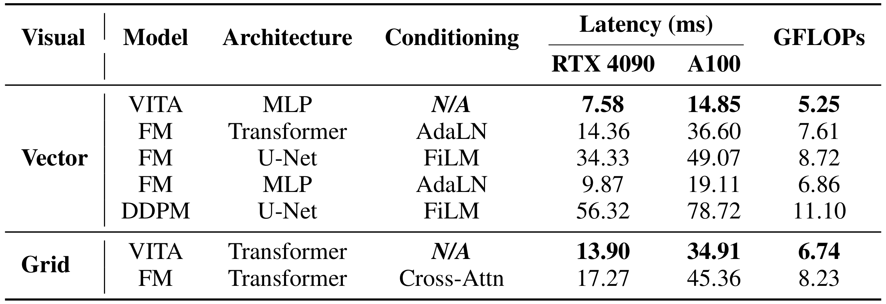

VITA Vision-To-Action Flow Matching Policy
ICLR 2026
- 1 University of California, Davis
- 2 University of California, Berkeley
Noise-Free, Conditioning-Free Policy Learning
VITA: Vision-to-Action Flow Matching
VITA directly flows from latent images to latent actions—without sampling from Gaussian noise or relying on visual conditioning modules.
VITA delivers fast convergence, high precision, and strong success rates while maintaining very fast inference.
Conventional flow matching
VITA
VITA performance
Fast inference
Fast convergence
High precision
Abstract
We present VITA, a VIsion-To-Action flow matching policy that evolves latent visual representations into latent actions via flow matching for visuomotor control. Conventional flow matching and diffusion policies face a fundamental inefficiency: they sample from standard source distributions (e.g., Gaussian noise) and then require additional conditioning mechanisms, such as cross-attention, to condition action generation on visual information, incurring time and space overheads. We propose VITA, a novel paradigm that treats latent images as the source of the flow, and learns an inherent mapping from vision to action. Because the source of the flow is visually grounded, VITA eliminates the need for repeated conditioning during generation. VITA inherently enables simpler architectures such as MLPs. We evaluate MLP-only VITA on 9 simulation and 5 real-world tasks from ALOHA and Robomimic. Despite its simplicity, VITA outperforms or matches state-of-the-art policies, while speeding up inference by 1.5x to 2.3x. To our knowledge, VITA is the first MLP-only flow matching policy capable of solving complex bi-manual manipulation tasks like those in ALOHA benchmarks.
VITA Framework

VITA learns a continuous flow from latent visual representations to latent actions without requiring additional conditioning mechanisms. By leveraging visual and action vector representations, VITA reduces flow matching to a conditioning-free vector-to-vector mapping, allowing for the use of an MLP-only architecture while achieving strong performance across both simulation and real-world visuomotor tasks.
VITA Denoising
Comparison of the denoising process between conventional flow matching and VITA. Conventional flow matching denoises random Gaussian into actions, VITA flows from latent images to latent actions. Surprisingly, latent images manifest action semantics through VITA learning. The latent image can decoded into a smooth trajectory, and progressively refined by the ODE process. This explains why MLP-only VITA can achieve strong performance. VITA learns action-centric visual representations, leading to closely aligned latent manifolds of vision and action. Therefore, a lightweight MLP suffices for VITA, whereas MLP-only FM struggles due to the need to transport from an unstructured Gaussian prior to a structured action space

Latent Action Learning: Addressing Latent Collapse
VITA is the first that learns the flow along with latent actions in an end-to-end manner. Unlike latent diffusion for image generation, where the target latent space can be trainied via abundant image data, action data is sparse and limited and thus the target latent space is hard to be well pre-trained and frozen as the target for flow matching. Naively end-to-end training flow matching along with the target latent space leads to latent collapse (Figure (a) Left). We first time identify the cause of the issue as the training-test time gap between encoder-based latents and ODE-generated latents. We propose flow latent decoding (FLD), to backpropagate through the flow ODE solver during training, to close the gap by anchoring latent representations using ground-truth targets.

Higher Precision and Faster Convergence!

The MLP-only VITA shows significantly faster convergence and lower action errors compared to conventional methods (FM, DP, ACT) using transformers or U-Nets.
Stochasticity vs. Precision?
It is commonly recognized that DP/FM achieve superior performance because of their stochasticity and ability to capture multi-modality. However, we show that a fully deterministic policy, VITA, achieves higher precision, faster convergence, and superior online success rates. Recently, Much Ado about Noising (Chaoyi Pan et al.) reveals that multi-modality does not meaningfully explain the success of DP/FM policies, resonating with our findings.
Success Rates

We evaluate VITA on challenging bi-manual manipulation tasks, and single-arm tasks including 9 simulation and 5 real-world tasks on ALOHA, AV-ALOHA, Robomimic, covering bimnual and single-arm manipulation tasks. The MLP-only VITA consistently outperforms or matches state-of-the-art policies (including transformer-based conventional flow matching policy), while being significantly more efficient.
Efficiency

VITA can achieve 4,500 chunks/s throughput with 0.22 ms/chunk inference time on a single NVIDIA 4090. Compared with conventional methods, VITA reduces inference latency by approximately 50% to 130%, and peak memory usage by 18% to 27%.
VITA Demos: Real-World Tasks
VITA demonstrates robustness to online perturbations.
Online Perturbations
VITA demonstrates generalization to unseen objects.
Unseen Objects
Bimanual Tasks with Active Vision
Two challenging bimanual manipulation tasks on AV-ALOHA with an additional 7-DoF arm carrying an active vision camera. The robot must predict and reach the best viewpoint to avoid occulusions and increase precision.
Hidden Pick
Transfer From Box
VITA Demos: Real-World and Simulation Tasks
Hidden Pick
Transfer From Box
Pick Ball
Store Drawer
Thread Needle
Pour Test Tube
Hook Package
Slot Insertion
Transfer Cube
Square
PushT
BibTeX
@misc{gao2025vitavisiontoactionflowmatching,
title={VITA: Vision-to-Action Flow Matching Policy},
author={Dechen Gao and Boqi Zhao and Andrew Lee and Ian Chuang and Hanchu Zhou and Hang Wang and Zhe Zhao and Junshan Zhang and Iman Soltani},
year={2025},
eprint={2507.13231},
archivePrefix={arXiv},
primaryClass={cs.CV},
url={https://arxiv.org/abs/2507.13231},
}